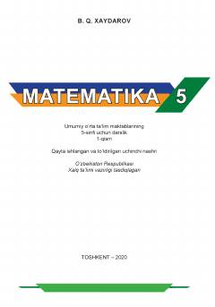

M55-sinf o'quvchilari uchun matematika fanidan 1-qism darslik.
Mazkur darslik umumiy o'rta ta'lim maktablarining 5-sinf o'quvchilari uchun mo'ljallangan bo'lib, natural sonlar, ul ustida amallar, matnli masalalar va geometrik shakllarni o'z ichiga oladi. Kitob o'quvchilarning mantiqiy fikrlashini rivojlantirish va amaliy ko'nikmalarini oshirishga xizmat qiladi.